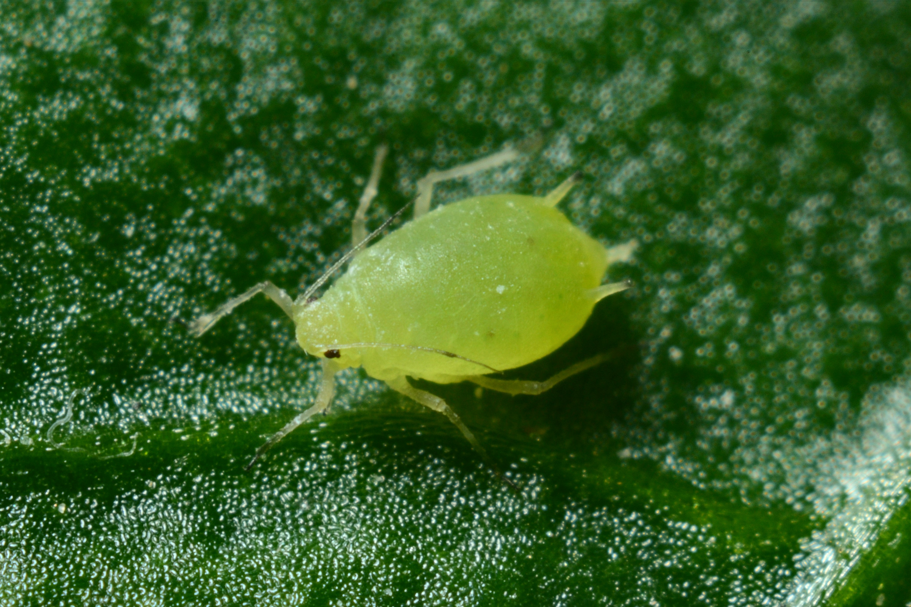

Aphids
StickyCurled tipsAnts nearby
- Blast with water; repeat in 2–3 days.
- Wipe with mild soapy water (leaf undersides).
- Attract ladybirds (dill, fennel, calendula nearby).
Quick ID cards with simple fixes you can try the same day.
StickyCurled tipsAnts nearby
Fine webSpeckled leavesDry air
Big holesSilvery trails

Little white cloudSticky leaves

Snake trailsThin tunnels

Brown patchesBlackened stems